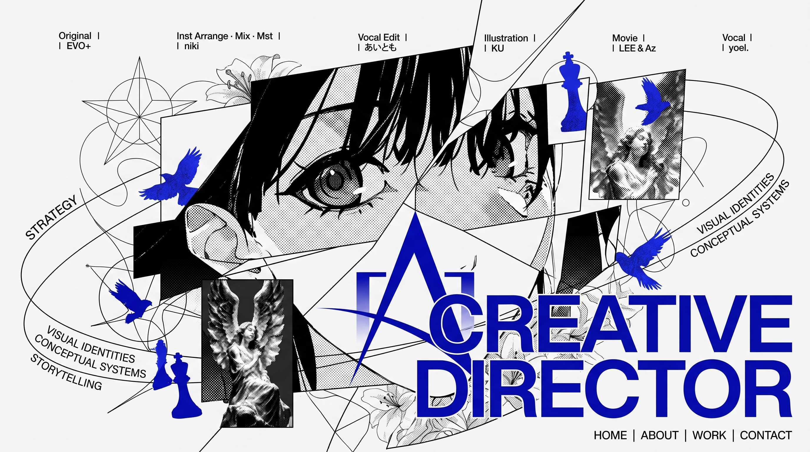

WEB EXPERIENCE / 2026
PROJECT DETAIL:
WEBSIGN
- ROLE
- Creative direction, visual system, front-end
- TOOLS
- HTML, CSS, JavaScript, Vite
- STATUS
- Prototype / Multi-page static site
一个围绕游戏艺术指导、视觉系统与世界观研究建立的多页面实验档案。通过 Plan A / Plan B 双路线、模块化内容和动态几何语言，让作品集本身成为被展示的作品。

